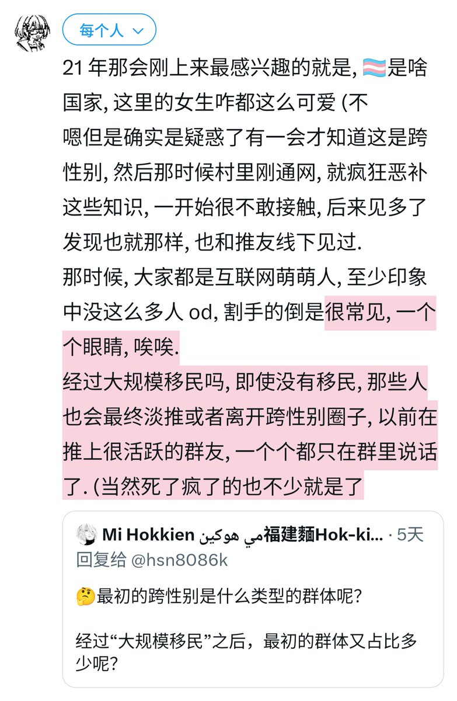

hsn今天吃什么
@hsn8086k
21 年那会刚上来最感兴趣的就是, 🏳️⚧️是啥国家, 这里的女生咋都这么可爱 (不
嗯但是确实是疑惑了有一会才知道这是跨性别, 然后那时候村里刚通网, 就疯狂恶补这些知识, 一开始很不敢接触, 后来见多了发现也就那样, 也和推友线下见过.
那时候, 大家都是互联网萌萌人, 至少印象中没这么多人 od, 割手的倒是

Mi Hokkien مي هوکين福建麵Hok-kiàn-mī 🇲🇾🇸🇬🇧🇳🇮🇩
@Malaysia_Mi
@hsn8086k 🤔最初的跨性别是什么类型的群体呢？
经过“大规模移民”之后，最初的群体又占比多少呢？